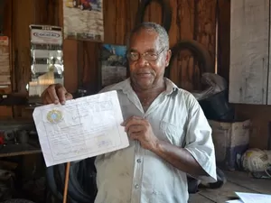

Sobre a Loja
Localizada ao lado da borracharia do tonho a Heaven&Hell traz para o mercado o que há de melhor em instrumentos musicais. Fundada em 1500 A.C, a Heaven&Hell já é destaque no mundo todo e deixa os clientes frenéticos.
Nossa missão é: "Arrancar seu dinheiro kkj".
Oferecemos profissionais experientes e antenados às mudanças no mundo da musica. O atendimento possui padrão de excelência e agilidade, garantindo musica de qualidade aos nossos clientes.
Nosso bellissímo estabelecimento
Nossa loja está localizada ao lado da borrracharia do tonho, o maior ponto de referência da cidade
Benefícios
- Guitarras furiosas
- Atendimento agíl
- Profissionais doidões
- Produtos